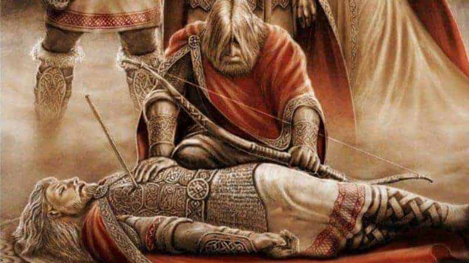
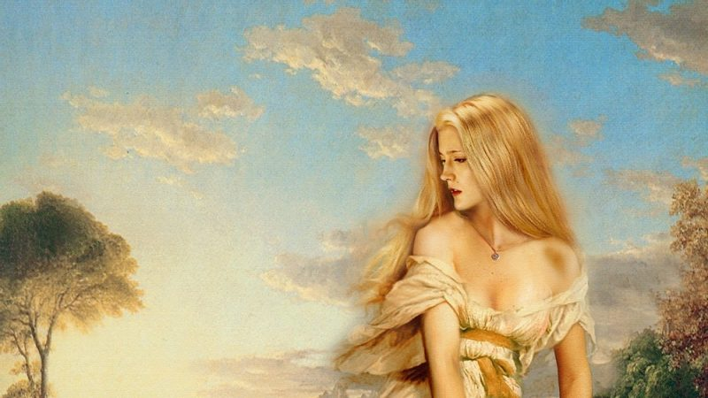
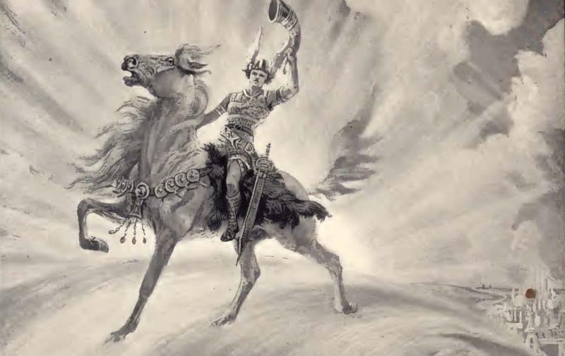
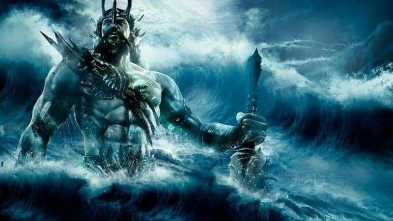
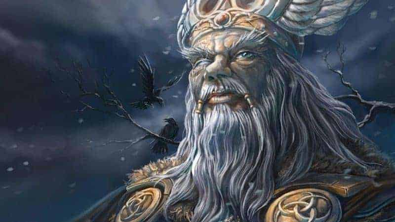
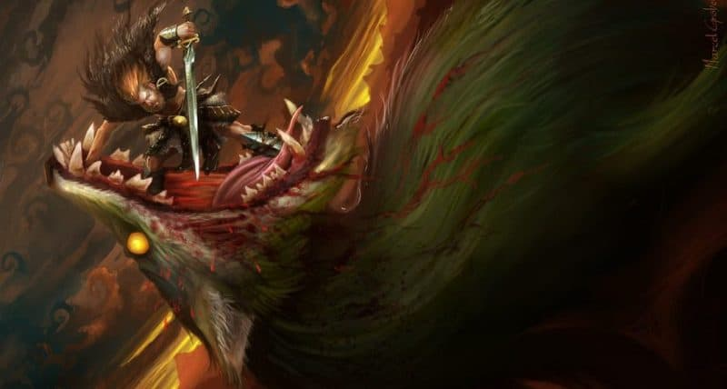
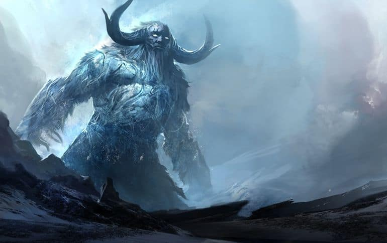

| DIOSES |
DEFINICIÓN |
FOTO |
| BALDER |
Dios de la paz, el perdón y la luz, es el segundo hijo de Odín, también
es llamado Baldur o Balder. Murió a manos de su hermano ciego, Hödr, tras ser manipulado por
Loki. |
 |
| FREYA |
Hermana de Frey, diosa del amor, la seducción y la belleza, así como de
la fertilidad femenina, invocada para tener buen resultado en los partos y en las cosechas.
Junto a Frigg fue la diosa más venerada de la religión nórdica, aunque también estaba asociada a
ciertos aspectos de la guerra, la muerte, la magia y la riqueza. |
 |
| HEIMDALL |
Dios guardián del Bifrost, puente entre el mundo de los mortales y el
de los dioses, era hijo de Odín y de nueve mujeres gigantes que lo criaron tomando sangre de
jabalí. De aguda visión y audición, podía estar sin dormir varios días y soplando su cuerno
anunciará la venidera guerra entre gigantes y dioses, preludio al fin del mundo. |
 |
| NJORD |
Era el dios de los océanos, los mares y la navegación. Según la
mitología nórdica, las criaturas marinas estaban a su servicio y se movía en un carro tirado por
dos ballenas. Tuvo dos hijos con Skadi (la diosa cazadora). Sus hijos gemelos se llamaban Frey y
Freya. |
 |
| ODIN |
Es el dios padre de los Aesir, dios de la sabiduría, la guerra y la
poesía, la magia, la profecía, la caza y la victoria. Reside en Asgard en su palacio de
Valaskjálf, desde cuyo trono puede contemplar los nueve mundos. En combate aparece montado en su
caballo de ocho patas, Sleipnir, y esgrimiendo su lanza, Gungnir. Se le representa como un viejo
barbudo y tuerto. |
 |
| VIDAR |
Dios del silencio, la venganza y la justicia, es hijo del dios Odín y
la giganta Grior, además es reconocido entre los dioses nórdicos como predestinado a renacer
luego del Ragnarok o fin del mundo. Tiene una amplia capacidad para resolver cualquier conflicto
sin importar la dificultad que tenga, muchos se referían de él como el silencioso hijo de Odín.
|
 |
| YMIR |
Es conocido como el primer ser, en la mitología nórdica. Fue un gigante
creado a partir de las gotas de agua que se formaron cuando el hielo de Niflheim se mezcló con
el calor de Muspelheim. Era considerado el padre de todos los gigantes del hielo. La narrativa
de la creación nórdica dice que su cuerpo hermafrodita produjo seres que continuarían soportando
incontables generaciones. Su viaje terminó en tragedia, pero debido a su naturaleza malvada,
nadie puede sentir lástima por el gigante. Su muerte llevó a la creación de los humanos y de la
Tierra. |
 |